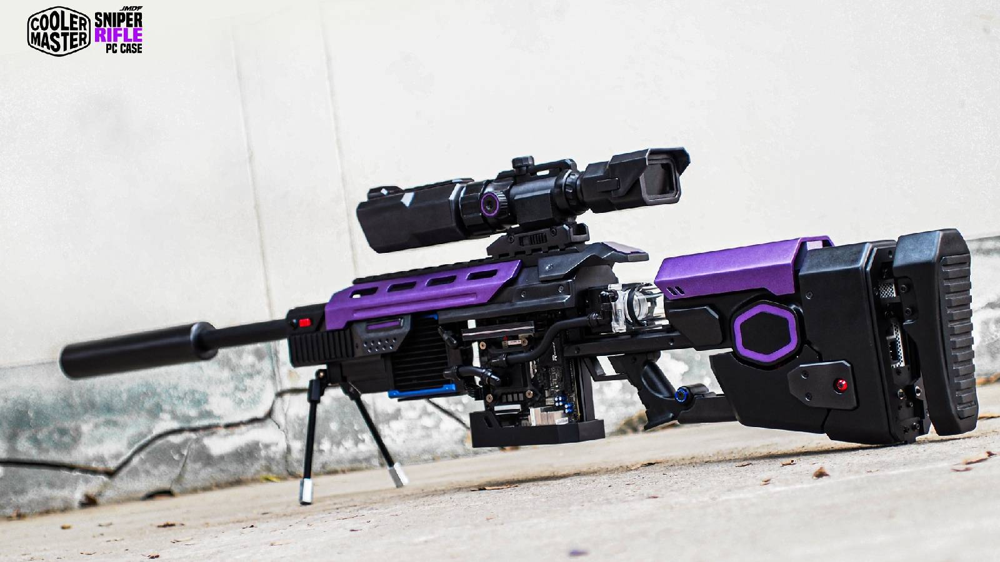
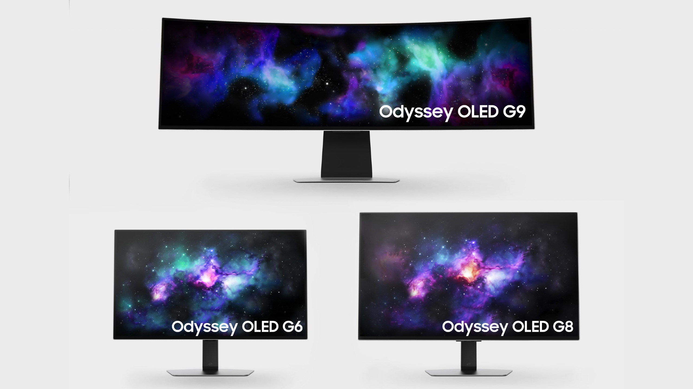

Jogador cria PC Gamer com formato de rifle sniper por R$ 14 mil
Postado em 03/06/2024 Um jogador criou um PC gamer no formato e tamanho de um rifle sniper de verdade. O tailandês de apelido Juggapat "JMDF" Modifier criou seu PC gamer para competir na Case Mod World Series 2024, uma competição de montagem de computadores da fabricante de peças Cooler Master. Para isso, ele desembolsou em torno de 100 mil Bahts tailandeses, algo que, pela cotação atual, equivale a cerca de R$ 14.430.
Leia maisSamsung lança monitores gamer Odyssey OLED G8 e G6 com tela de até 360 Hz
Postado em 03/06/2024 A Samsung lançou, nesta terça-feira (4), os novos monitores monitores Odyssey OLED G8 e OLED G6, ambos com tecnologia OLED nas telas. Os modelos são voltados para o público gamer, com hardware e recursos atualizados em relação às versões anteriores da linha. Como destaque, é possível encontrar os recursos OLED Glare-Free, que promete diminuir os reflexos de luz na superfície, assim como o tempo de resposta de 0,03 ms para uma gameplay sem atrasos.
Leia maisPostagens recentes
Os casos de doenças pulmonares relacionadas ao uso de cigarros eletrônicos subiram para 530 nos Estados Unidos, enquanto oito mortes já foram confirmadas. A vítima mais recente faleceu em setembro. De acordo com informações divulgadas pelo jornal norte-americano New York Times, um homem de cerca de 40 anos deu entrada no hospital em agosto com problemas respiratórios e teve morte confirmada cerca de um mês depois.
Leia maisPesquisadores da Universidade Tufts, nos EUA, desenvolveram um tipo de transistor que tem potencial para tornar dispositivos eletrônicos completamente flexíveis. A novidade, ademais, pode ser entrelaçada para produzir tecidos ou ser incorporada a eles, podendo ser usados sobre a pele, ou até implantados em órgãos e estruturas do corpo humano para o monitoramento de doenças e realização de diagnósticos, além de apresentar outras possíveis aplicações.
Leia mais